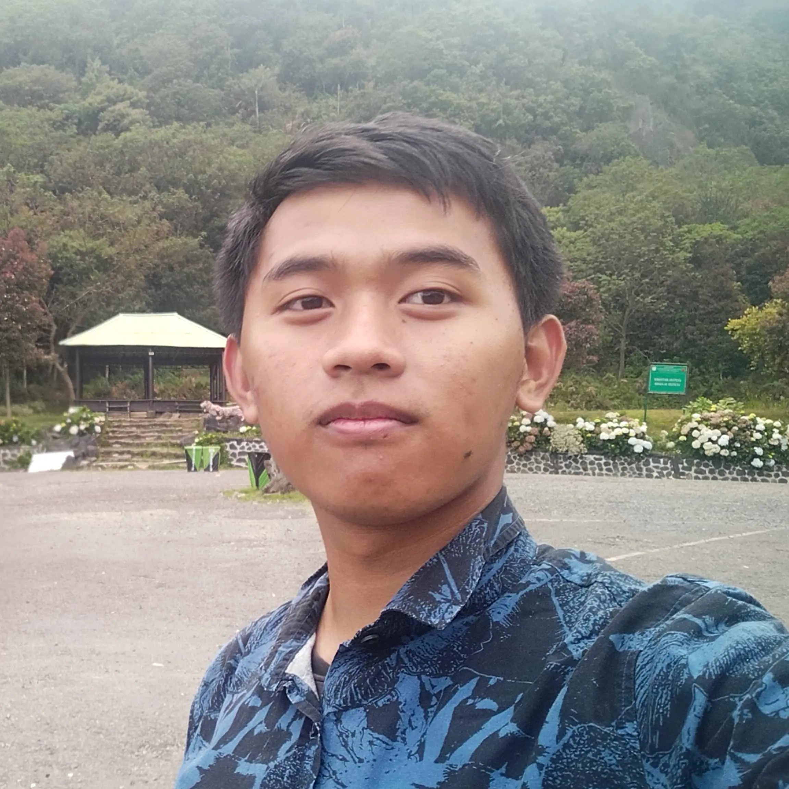

Highly dedicated Information Technology undergraduate specializing in Fullstack Development, Quality Control (QC), and Cybersecurity. Experienced in end-to-end web architecture and automated software testing.
Garut, Indonesia

Education
Universitas Garut
Sep 2023 – Present
Undergraduate in Information Technology
Cumulative GPA: 3.94 / 4.0
SMAN 15 Garut
2020 – 2023
Natural Sciences
Cumulative GPA: 84 / 100
Work Experience
Universitas Garut
Oct 2024 – Present
Teaching Assistant
Mentored over 185 students in practical lab sessions across Data Structures, Databases, and Data Communication Networks.
Designed and authored 20 comprehensive technical modules tailored to current academic requirements.
Guided active classes of up to 54 students, facilitating discussions, technical problem-solving, and academic progress monitoring.
Population and Civil Registration Agency
Jul 2023 – Aug 2023
Freelance Developer
Developed a Resident Data Recapitulation System for the Cikajang Subdistrict to streamline data submission workflows for village IT operators.
Engineered a public-facing Profile Website and an internal Administrative Recapitulation System for the Balubur Limbangan Subdistrict.
Technical Projects
Kindergarten Report Generator Application (R-TK)
Developed an end-to-end localized reporting application with installer capabilities for TK Al-Ikhlas, completed in December 2025.
Integrated automated student data extraction from the national Dapodik system and engineered a "Click to Fill" feature.
Successfully deployed across 2 institutions, drastically reducing report generation time from 7-10 days to just 1 day.
Designed and executed 32 automated test scenarios using Katalon Studio alongside manual testing protocols for Haruman Rent Car to ensure strict adherence to functional requirements.
Directed organizational activities for 67 members, overseeing 4 technology divisions and a gaming division accommodating over 35 active participants.
Orchestrated the transition of organizational leadership, establishing evaluation criteria and effectively selecting the successor for the 2026 term.
Previously served as Public Relations Officer & Head of Computer Basics Division (Jul 2024 - Mar 2025), organizing university-scale events and weekly digital literacy workshops.
Student Council (OSIS) SMAN 15 Garut
Sep 2021 – Dec 2022
President
Spearheaded the organization of over 12 major school events and initiated 5 collaborative programs with external organizations including PLN and Telkomsel.
Facilitated the school's implementation of the "Kurikulum Merdeka" by coordinating directly with administrative staff and teachers.
Awards & Certifications
Top 100 Global – SKNB CTF (Rank 38) & Bluehens CTF (Rank 64)
Ambassador of Law and Human Rights – FPSH HAM West Java (2023)
2nd Place – Islamic Speech Competition, Health Polytechnic of Tasik (2022)
Certifications: FOJB One Day Training (2022), Basic Leadership Training IRMA Jabar (2021)